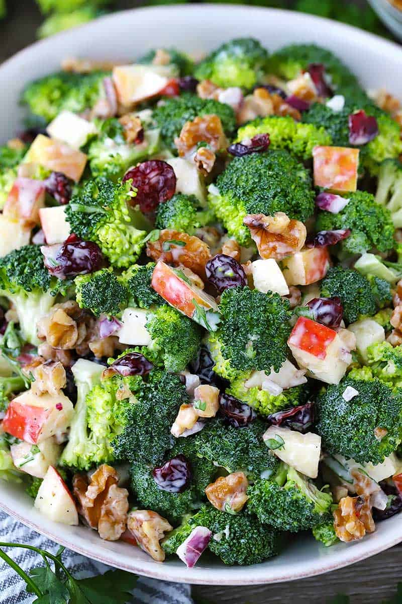

Broccoli and Apple Salad

Taste of Home
Even my picky daughters love this one. They will never forget this delicate salad!
Ingridients
- 3 cups small fresh broccoli florets
- 3 medium apples chopped
- 1/2 cup chopped mixed dried fruit
- 1 tablespoon chopped red onion
- 1/2 cup reduced-fat plain yogurt
- 4 bacon strips, cooked and crumbled
Directions
- In a large bowl, combine broccoli, apples, dried fruit and onion
- Add yogurt; toss to coat
- Sprinkle with bacon
- Refrigerate until serving